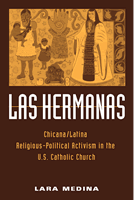

<body bgcolor="#FFFFFF" text="#000000" link="#0000FF" vlink="#CC0000" alink="#CC0000"><center><hr width="350" size="1" align="center" noshade>The history of a feminist religious movement that mobilized the Chicana/Latina community<hr width="350" size="1" align="center" noshade><p><a href="https://cdcshoppingcart.uchicago.edu/Cart/ChicagoBook.aspx?ISBN=9781592132508&&PRESS=temple" target="_top">Buy this book!</a> | <a href="https://cdcshoppingcart.uchicago.edu/Cart/Cart.aspx?PRESS=temple" target="_top">View Cart</a> | <a href="https://cdcshoppingcart.uchicago.edu/Cart/Cart.aspx?PRESS=temple" target="_top">Check Out</a></p><p></p></center><!--none//--><h1>Las Hermanas</h1>
<H2>Chicana/Latina Religious-Political Activism in the U.S. Catholic Church</H2>
<h3>Lara Medina</h3>
<P>cloth 1-59213-250-2 $49.50, Jun 04, <FONT COLOR=#990033>Out of Stock Unavailable</FONT>
<br>paper 1-59213-483-1 $31.95, Sep 05, <FONT COLOR=#990033>Available</FONT>
<BR> 232 pp
5.5x8.25
10&nbsp;halftones
</P><h3 align="center"><P><font color="#996633">Outstanding Academic Title, <i>Choice</i>,
2005</font></P>
</H3>
<BLOCKQUOTE><I>"</i>Las Hermanas<i> is an original piece of research and writing. Medina provides important knowledge about a Latina religious group and sheds light on the historical context out of which Las Hermanas emerged. This book adds to our understanding of the diversity of religious experiences in the U.S. as well as broadens our understanding of the 1960s social movements. </i>Las Hermanas<i> is a significant contribution to the developing historiography concerning the Chicano Movement as well as a welcome corrective to the male-centered historical treatment of the movement."</i>
<br>&#151<b>Mario García</b>, Department of History and Chicano Studies, University of California, Santa Barbara, and author of several books on Chicano/a history including <i>Mexican Americans: Leadership, Ideology, and Identity 1930-1960</i> and <i>Migrant Daughter: Coming of Age as a Mexican American Woman</i><i></I></BLOCKQUOTE>
<p>In this historical study, Lara Medina examines the early development and continuing influence of Las Hermanas, a feminist organization established in 1971 to counter the patriarchy and Eurocentrism of the U.S. Catholic Church.
<p>Lara Medina weaves archival research and oral interviews into a cohesive narrative that highlights the keen ethnic and political awareness among the movement's leaders and participants. Medina also illuminates the strides made by Las Hermanas in undermining and reorienting the male-dominated structure of both the Catholic ministry and the Chicano civil rights movement.
<p>By showing how the group has engaged such issues as moral authority, sexuality, and domestic abuse through its religiously informed efforts in grassroots community organizing and education, Lara Medina showcases the crucial role played by Las Hermanas in the articulation of a spiritually and politically grounded Latina/Chicana identity.
<BR>&nbsp;<h2>Excerpt</h2><P>Excerpt available at <a href="http://www.temple.edu/tempress">www.temple.edu/tempress</a></p>
<BR>&nbsp;<h2>Reviews</h2>
<p><i>"Lara Medina's book is groundbreaking in its contribution to both Latino/a and Roman Catholic history. It offers new material on Las Hermanas, an extremely important organization that has long been neglected by religious historians. In addition, the book brings forth the religious dimension of Chicana/Latina political activism, an aspect often ignored by secular Chicano/a scholars."</i>
<br>&#151<b>Michelle A. Gonzalez</b>, Assistant Professor, Theological Studies, Loyola Marymount University, and author of <i>Sor Juana: Beauty and Justice in the Americas</i>
<p><i>"Extensively researched, well contextualized, and compellingly told, </i>Las Hermanas<i> will change the way people think about Mexican American women, and change also the way people think about the Catholic Church. It demands serious attention."</i>
<br>&#151<b>Luis D. León</b>, author of <i>La Llorona's Children: Religion, Life, and Death in the US-Mexican Borderlands</i>
<p><i>"Medina offers a well-researched and well-written history of Las Hermanas... [She] carefully details Las Hermanas's struggles...[and b]attles waged by Las Hermanas to bring about reform are vividly described.... [t]his scholarly work, the only book-length work on this important feminist group, fills the void in the literature of the disciplines of Chicana/o studies, religious studies, and women's studies. Summing Up: Highly recommended."</i>
<br>&#151<b><i>Choice</i></b>
<p><i>"Lara Medina provides a very moving account of the impact an organized group of clerical and lay Latinas, primarily Chicanas, has had on both institutional reform within the Roman Catholic Church and social reform in the United States over the past three decades... She does an excellent job reviewing how Las Hermanas are engaged in larger social movements... For those unfamiliar with these organizations and initiatives, this text is a valuable resource. For those already well acquainted with these groups, Medina provides 'insider' captivating accounts of the conflicts and collaborations between these groups over three decades."</i>
<br>&#151<b><i>The Review of Politics</i></b>
<p><i>"Medina compellingly demonstrates the role played by Chicana/Latina women in addressing such issues as working conditions of migrant workers, the moral authority of the Church and its sexist reality, and the problem of family violence.... Anyone interested in the development of people in the context of their religion and the relationship of religion to that development will find this book most helpful and engaging."</i>
<br>&#151<b><i>Journal of Religion & Spirituality in Social Work</i></b>
<p><i>"This is a welcome supplemental text for anyone interested in the history of Latina activism within the Catholic Church.... Medina has a sure touch with her informants, the leaders of Las Hermanas. Her descriptions provide a reliable account of the events and circumstances that shaped the organization."</i>
<br>&#151;<b><i>The Americas</i></b>
<p><i>"[An] historical and sociological compelling work."</i>
<br>&#151;<b><i>American Catholic Studies</i></b>
<p><i>"Like the Hermanas, Lara Medina does not mince words. The result is a fascinating look at what the Catholic Church in the United States experienced from the 1970s to 2004 through the eyes of a defiant group of nuns and laywomen. ...Medina has filled a critical scholarly void... [T]his book is an eye-opener."</i>
<br>&#151;<b><i>Catholic Southwest</i></b>
<BR>&nbsp;<h2>Contents</h2><P>
<p>Acknowledgments
<br>About the Jacket
<br>Introduction
<br>1. The Emergence of Las Hermanas: The Social Context
<br>2. <i>Unidas en acción y oración:</i> Chicana/Latina Religious Leaders
<br>3. <i>Una Nueva Iglesia Latina:</i> Activism and Alliances, 1971-1980
<br>4. The Challenge of Being Chicana/Latina, Catholic, and Feminist
<br>5. Transformative Struggle: The Spirituality and Theology of Las Hermanas
<br>Conclusion
<br>Appendix: Acronyms
<br>Notes
<br>Bibliography
<br>Index
<br><i>Photograph gallery follows page 82</i>
</P><BR>&nbsp;<H2>About the Author(s)</H2>
<P><b>Lara Medina</b> is Associate Professor, Department of Chicano and Chicana Studies, California State University, Northridge.</P>
<BR><H2>Subject Categories</H2>
<p><A HREF="/tempress/latino.html" TARGET="_top">Latino/a Studies</a>
<BR><A HREF="/tempress/religion.html" TARGET="_top">Religion</a>
<BR><A HREF="/tempress/women.html" TARGET="_top">Women's Studies</a>
</p>
<p align="center"><a href="https://cdcshoppingcart.uchicago.edu/Cart/ChicagoBook.aspx?ISBN=9781592132508&&PRESS=temple" target="_top">Buy this book!</a> | <a href="https://cdcshoppingcart.uchicago.edu/Cart/Cart.aspx?PRESS=temple" target="_top">View Cart</a> | <a href="https://cdcshoppingcart.uchicago.edu/Cart/Cart.aspx?PRESS=temple" target="_top">Check Out</a></p><p><font face="Arial" size="1"><a href="copyright.html" onMouseOver="window.status='Web Copyright Policy';return true;" onMouseOut="window.status=''" title="Web Copyright Policy">&copy;</a> 2015 <a href="http://www.temple.edu" target="new" onMouseOver="window.status='Link to Temple University home page';return true;" onMouseOut="window.status=''" title="Link to Temple University home page">Temple University</a>. All Rights Reserved. http://www.temple.edu/tempress/titles/1579_reg.html</font></p>